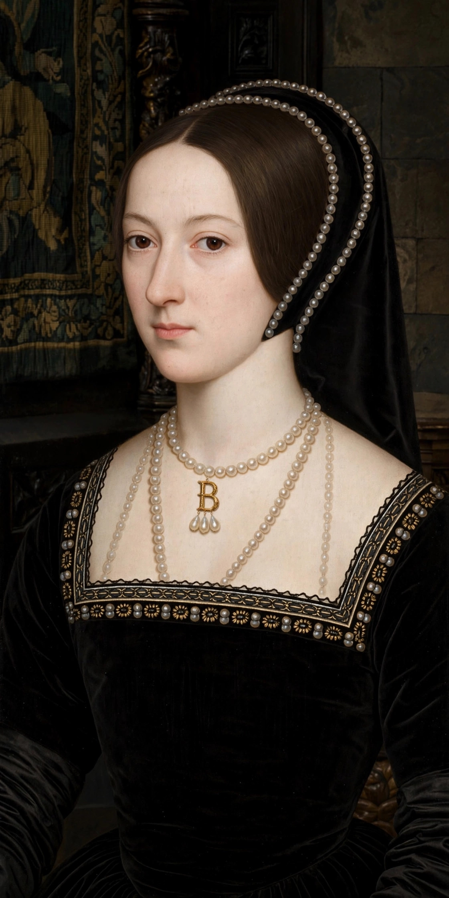

| Anne Boleyn | |
|---|---|
 | |
| Tenure | 28 May 1533 – 17 May 1536 (Queen consort of England) |
| Coronation | 1 June 1533 |
| Born | c. 1501 or 1507, Blickling Hall or Hever Castle, England |
| Died | 19 May 1536 (executed), Tower of London |
| Burial | St Peter ad Vincula, Tower of London |
| Spouse | Henry VIII |
| Issue | Elizabeth I |
| Parents | Thomas Boleyn, 1st Earl of Wiltshire; Lady Elizabeth Howard |
Anne Boleyn (c. 1501/1507 – 19 May 1536) was Queen of England from 1533 to 1536 as the second wife of King Henry VIII. Henry's pursuit of Anne, and his determination to annul his marriage to Catherine of Aragon in order to marry her, were the immediate cause of England's break with the Roman Catholic Church and a catalyst of the English Reformation. Anne was the mother of Elizabeth I. Arrested on charges of adultery, incest, and treason in May 1536, she was convicted by a jury that included her own uncle and executed by beheading at the Tower of London. Historians have long debated her guilt; most now regard the charges as fabricated or unproven.
Anne was the daughter of the diplomat Thomas Boleyn and Elizabeth Howard, daughter of the Duke of Norfolk. She spent part of her youth in the Netherlands as a maid of honour to Margaret of Austria — who praised her wit and polish — and then in France, in the household of Queen Claude. Returning to England around 1522, she became a maid of honour to Catherine of Aragon and one of the most admired figures at court: fashionable, musical, fluent in French, and noted for her dark eyes and sharp intelligence.
Henry VIII fell in love with Anne around 1526. Unlike her sister Mary, who had been the king's mistress, Anne refused the role, and Henry resolved to marry her. His campaign to annul his marriage to Catherine — the "King's Great Matter" — consumed English politics for six years, failed to gain papal approval, and ended with England's break from Rome: Henry was excommunicated, and the English church was placed under royal supremacy. Henry and Anne married in January 1533, once Anne was pregnant; Archbishop Cranmer declared the Aragon marriage annulled in May, and Anne was crowned queen on 1 June 1533 in a splendid coronation at Westminster Abbey. Her daughter Elizabeth was born that September.
As queen, Anne was a patron of religious reform, promoting the English Bible and evangelical clergy, and a formidable political presence. But the marriage soured: Anne suffered miscarriages, including of a male fetus in January 1536, and rivals at court — including Thomas Cromwell, her former ally — turned against her. On 2 May 1536 she was arrested and charged with adultery with five men, among them her own brother George Boleyn, and with plotting the king's death. A jury convicted her on 15 May; the five accused men were executed on 17 May, Anne's marriage was annulled, and on 19 May 1536 she was beheaded on Tower Green by an expert swordsman brought from Calais — a French-style execution granted in place of the axe. She was buried in an unmarked grave in the chapel of St Peter ad Vincula.
Anne's daughter became Elizabeth I, one of England's most celebrated monarchs, and Protestant memory recast Anne as a heroine of the Reformation, while Catholic tradition long portrayed her as a schemer. Her reported final scaffold speech, her motto "the most happy", and her dramatic rise and destruction have made her one of the most written-about women of the Tudor age, and recent scholarship has emphasised both her political agency and the weakness of the evidence on which she was destroyed.
See also: Henry VIII · Elizabeth I · Dissolution of the monasteries · Thomas Cromwell